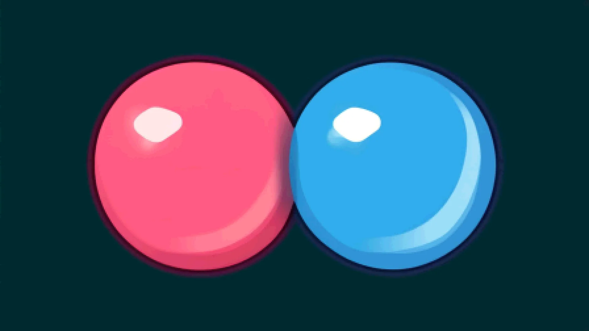
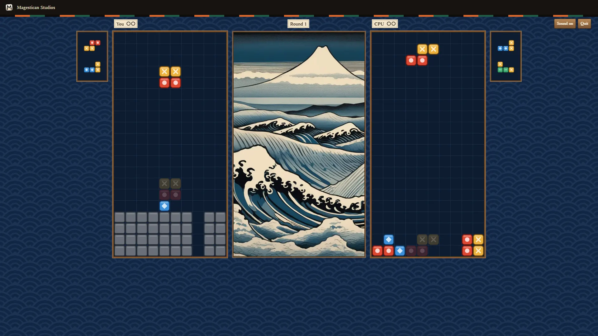
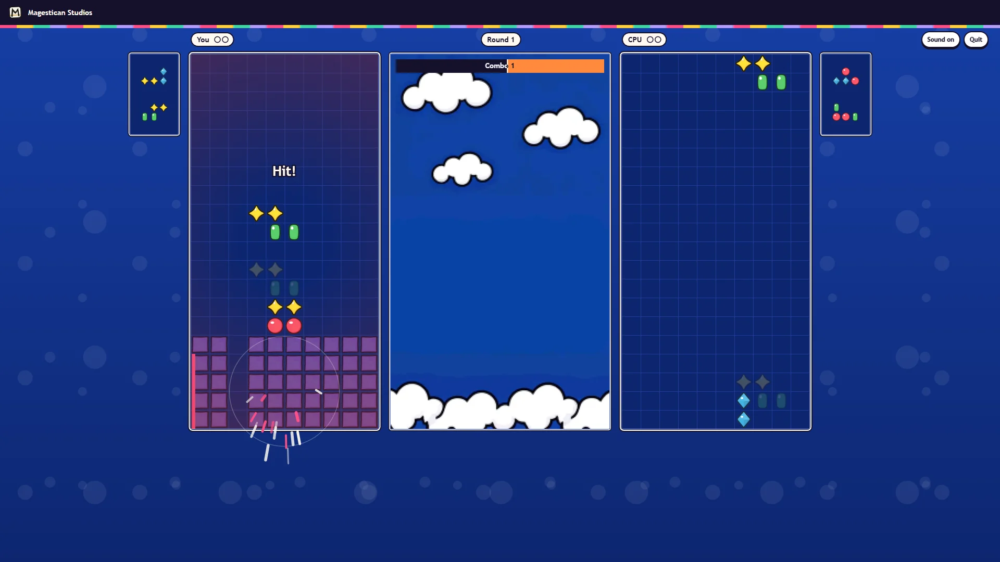

Clashwell — a falling-gem duel for two
Clashwell is a falling-gem duel that runs in your browser: two wells stand side by side with a fighter above each, and every gem you stack turns into a punch your fighter throws at the other well. Fire back while their punch is still winding up and the two attacks meet at centre stage. It is free, with nothing to download and no account, against the computer or a friend, on a phone or a laptop.


The well and the pieces
Each well is 10 cells wide and 20 high. Pieces fall into it one at a time, seven shapes made of four squares, and each piece carries two of the four colours, two squares of each. You can see the next three coming. Both players get the same pieces in the same order in a round, so nobody wins on luck. Let a piece settle above the top of your well and you lose the round.
What happens when a piece locks
A piece locks when it lands, and then the well sorts itself out. Every full row clears. Four or more gems of the same colour that touch each other pop, and any grey stone touching a popped gem cracks and clears with it. Then everything left falls straight down. If that fall lines up another row or another group, it clears too, and each extra pass is one more step of a chain. The game pauses for half a second between steps, so you can follow your own chain as it goes.
Jabs, combos and stone rows
Clearing rows throws a jab. One row sends one row of stone to your rival, two send two, three send three, and four at once send five. Popping gems throws a combo, which hits much harder: a chain of one adds one stone row, two adds three, three adds five, four adds eight, and five or more adds 12. Stone rows rise into your rival's well the next time their piece locks, each with one gap in it. Fill that gap to clear the row, or pop a gem beside the stones to crack them.
The wind-up and the Clash
Your fighter does not hit at once. A jab winds up for 1.2 seconds and a combo for 2 seconds, and a bar fills while it does. That wait is your rival's chance. If they fire their own attack before your bar is full, the two attacks meet at centre stage in a Clash. The smaller one is taken off the bigger one and whatever is left carries on. An even Clash cancels both. So when you see a big combo winding up against you, the best answer is often a quick one of your own.
Rounds and the Squeeze
The first player to win two rounds takes the match, with a three-second breather between rounds. Pieces fall one cell a second at the start and a little faster every 20 seconds. From two minutes in, the Squeeze begins: stone rows rise in both wells at the same moment, first after eight seconds, then sooner each time, and more rows at a time as it goes on. It treats both players the same, so it ends a long round without picking the winner. In our tests rounds ran between about two and three minutes.
Keys and the touch pad
On a keyboard, left and right move the piece, up or X turns it, and Z turns it the other way. Down drops it faster and Space drops it at once. On a phone or tablet you play with the touch pad instead: big buttons for the same moves appear under the wells. Start puts you straight into a match. More ways holds the rest: four fighters to choose from, the rival's level, a room for a friend, how to play, and sound.
The rival
The computer rival presses only the keys you have and sees only what you can see on screen. It never gets better pieces. Easy, Medium and Hard stay where you set them. Adaptive is where it starts, and it shifts between rounds: it plays a little better after you win a round and a little worse after you lose one, so most players should win more matches than they lose. No person's play has measured how often yet.
Rooms, invites and watching
Creating a room gives you three things to share: a short code, a link that invites a player, and a second link for watching. Send the invite to a friend and they take the computer's seat at the start of the next round; any seat nobody is in is played by the computer. Each screen shows its own moves straight away and catches up when the other player's keys arrive. Anyone with the watch link can follow the match live and press Cheer, and a watcher cannot play. If a player leaves in the middle of a match, they lose it.
What is still rough
The stage is a finished woodblock print, but the gems and the four fighters are stand-ins, and picking a fighter does not change how you play yet. The balance, the speeds and the Squeeze came from scripts that play the game, and no person's play has gone into them. We have not tested a match between two different networks, or the share sheet on a real phone. The game's words come in English and Japanese, and the Japanese has not yet been read by a native speaker. This page is in English only. We keep no count of plays for Clashwell on this site, and the game earns no badges and gets no place on your shelf yet.
More like this: 2-player games online · Multiplayer browser games